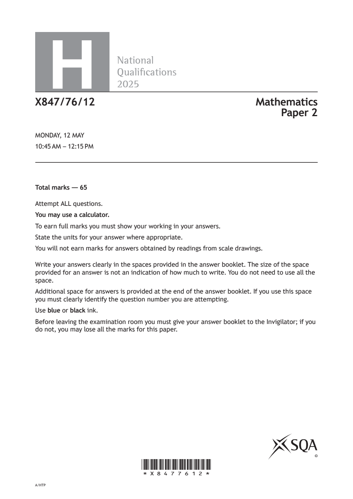
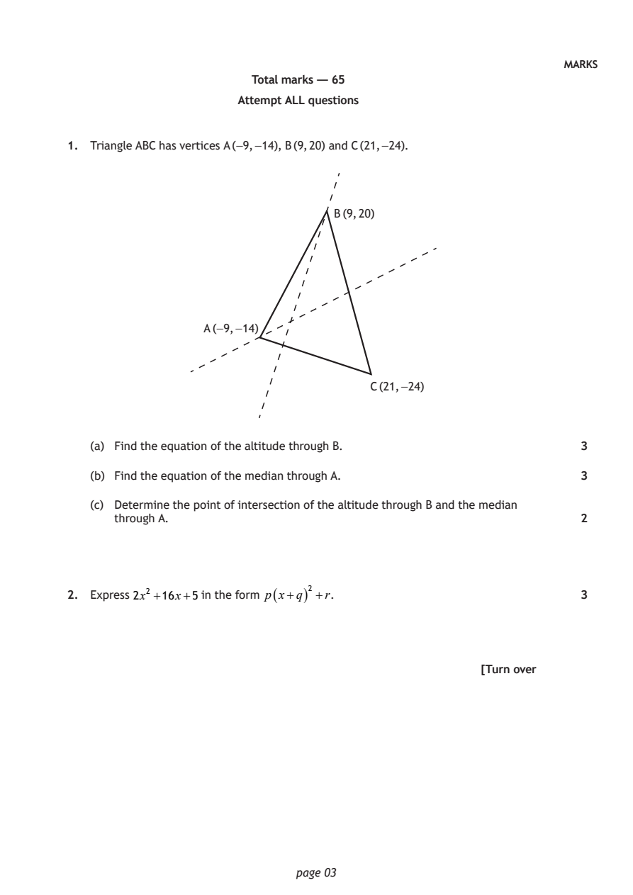
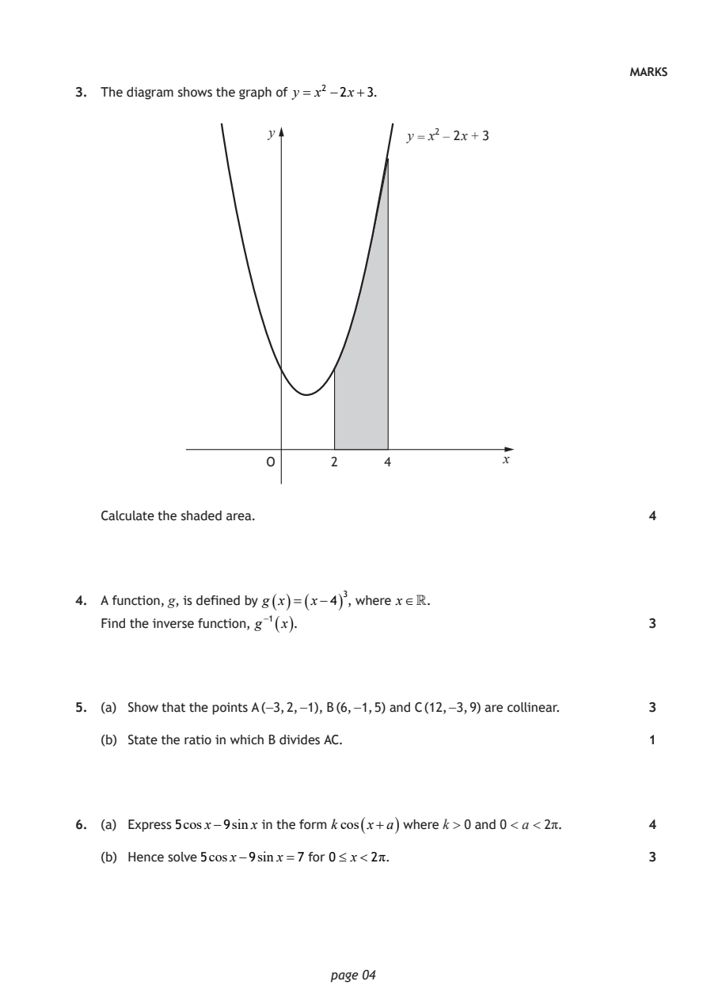
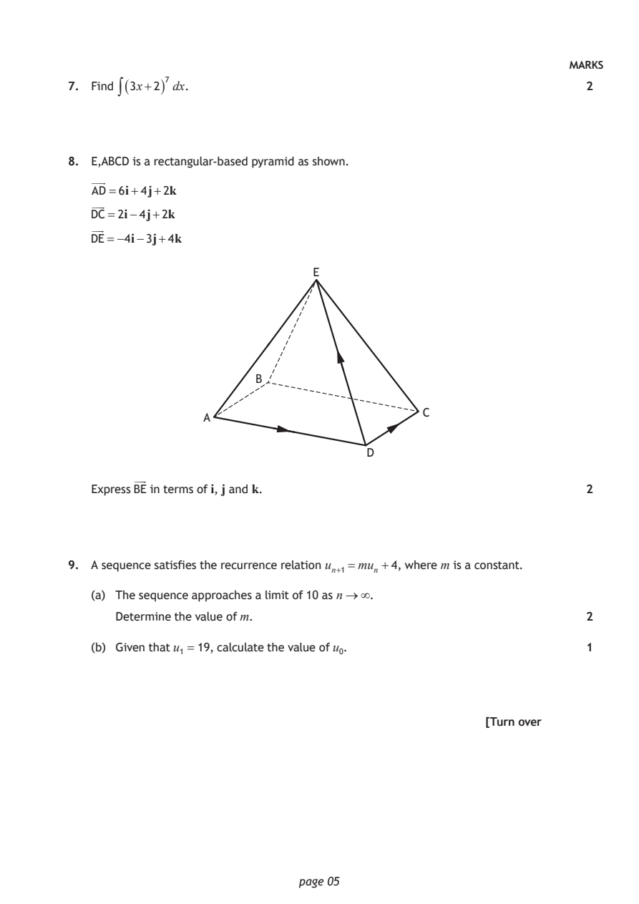
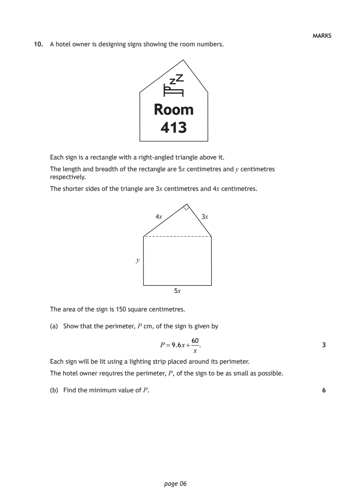
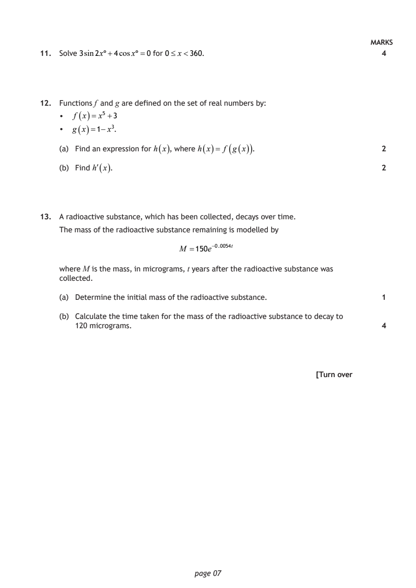
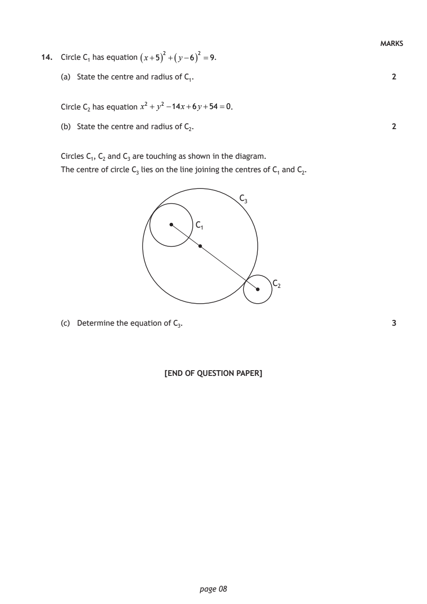

2025 Higher Mathematics - Paper 2 questions
Source: Scottish Qualifications Authority (SQA) / Qualifications Scotland. This is a StemInteract HTML companion, not an official HTML edition. Selectable text is supplied alongside original page images. Use the images or original PDF for equations, powers, fractions, vector notation, tables and diagrams; text extraction cannot fully preserve mathematical layout.
Jump to a question
PDF page 1

Selectable page text
H
National
Qualications
2025
X847/76/12 Mathematics
Paper 2
MONDAY, 12 MAY
10:45 AM – 12:15 PM
Total marks — 65
Attempt ALL questions.
You may use a calculator.
To earn full marks you must show your working in your answers.
State the units for your answer where appropriate.
You will not earn marks for answers obtained by readings from scale drawings.
Write your answers clearly in the spaces provided in the answer booklet. The size of the space
provided for an answer is not an indication of how much to write. You do not need to use all the
space.
Additional space for answers is provided at the end of the answer booklet. If you use this space
you must clearly identify the question number you are attempting.
Use blue or black ink.
Before leaving the examination room you must give your answer booklet to the Invigilator; if you
do not, you may lose all the marks for this paper.
©
*X8477612*
A/HTPPDF page 2

Selectable page text
FORMULAE LIST
Circle
The equation x² + y²+ 2gx + 2fy + c=0 represents a circle centre (−g, −f ) and radius g² + f ² −c.
The equation (x−a)² + (y−b)² =r² represents a circle centre (a, b) and radius r.
Scalar product ab= a bcos θ, where θ is the angle between a and b
a₁ b₁
or ab=a₁b₁+a₂b₂ +a₃b₃ where a= a₂ and b= b₂ .
a₃ b₃
Trigonometric formulae sin(A±B)=sinA cosB ± cos AsinB
cos(A±B)=cosAcosB ∓ sinAsinB
sin2A =2sinAcosA
cos2A=cos²A−sin²A
=2cos²A−1
=1−2 sin²A
Table of standard derivatives
f(x) f′(x)
sinax acosax
cosax −asinax
Table of standard integrals
f(x) ∫ f(x)dx
1
sinax − cosax + c
a
1
cosax sinax + c
a
page 02PDF page 3
Paper 2, Question 1Paper 2, Question 2
Selectable page text
MARKS
Total marks — 65
Attempt ALL questions
1. Triangle ABC has vertices A (−9, −14), B (9, 20) and C (21, −24).
B (9, 20)
A (−9, −14)
C (21, −24)
(a) Find the equation of the altitude through B. 3
(b) Find the equation of the median through A. 3
(c) Determine the point of intersection of the altitude through B and the median
through A. 2
2. Express 2x² +16x+5 in the form p ( x+q ) ² +r. 3
[Turn over
page 03PDF page 4
Paper 2, Question 3Paper 2, Question 4Paper 2, Question 5Paper 2, Question 6
Selectable page text
MARKS
3. The diagram shows the graph of y = x² −2x+3.
y y = x² – 2x + 3
O 2 4 x
Calculate the shaded area. 4
4. A function, g, is defined by g ( x )=( x−4 ) ³, where x.
Find the inverse function, g⁻¹ ( x ). 3
5. (a) Show that the points A (−3, 2, −1), B (6, −1, 5) and C (12, −3, 9) are collinear. 3
(b) State the ratio in which B divides AC. 1
6. (a) Express 5cosx−9sinx in the form kcos ( x+a ) where k > 0 and 0 < a < 2π. 4
(b) Hence solve 5cosx−9sinx=7 for 0≤ x<2π. 3
page 04PDF page 5
Paper 2, Question 7Paper 2, Question 8Paper 2, Question 9
Selectable page text
MARKS
7. Find ∫( 3x+2 ) ⁷ dx. 2
8. E,ABCD is a rectangular‑based pyramid as shown.
AD=6i+4j+2k
DC=2i−4j+2k
DE=−4i−3j+4k
E
B
C
A
D
Express BE in terms of i, j and k. 2
9. A sequence satisfies the recurrence relation uₙ₊₁=muₙ +4, where m is a constant.
(a) The sequence approaches a limit of 10 as n∞.
Determine the value of m. 2
(b) Given that u₁ = 19, calculate the value of u₀. 1
[Turn over
page 05PDF page 6
Paper 2, Question 10
Selectable page text
MARKS
10. A hotel owner is designing signs showing the room numbers.
Room
413
Each sign is a rectangle with a right‑angled triangle above it.
The length and breadth of the rectangle are 5x centimetres and y centimetres
respectively.
The shorter sides of the triangle are 3x centimetres and 4x centimetres.
4x 3x
y
5x
The area of the sign is 150 square centimetres.
(a) Show that the perimeter, P cm, of the sign is given by
60
P=9.6x+ . 3
x
Each sign will be lit using a lighting strip placed around its perimeter.
The hotel owner requires the perimeter, P, of the sign to be as small as possible.
(b) Find the minimum value of P. 6
page 06PDF page 7
Paper 2, Question 11Paper 2, Question 12Paper 2, Question 13
Selectable page text
MARKS
11. Solve 3sin2x°+4cosx°=0 for 0≤ x<360. 4
12. Functions f and g are defined on the set of real numbers by:
• f ( x )= x⁵ +3
• g ( x )=1−x³.
(a) Find an expression for h ( x ) , where h ( x )= f ( g ( x )) . 2
(b) Find
h(
x
)
. 2
13. A radioactive substance, which has been collected, decays over time.
The mass of the radioactive substance remaining is modelled by
M =150e⁻⁰^{.}⁰⁰54t
where M is the mass, in micrograms, t years after the radioactive substance was
collected.
(a) Determine the initial mass of the radioactive substance. 1
(b) Calculate the time taken for the mass of the radioactive substance to decay to
120 micrograms. 4
[Turn over
page 07PDF page 8
Paper 2, Question 14
Selectable page text
MARKS
14. Circle C₁ has equation ( x+5 ) ² +( y−6 ) ² =9.
(a) State the centre and radius of C₁. 2
Circle C₂ has equation x² + y² −14x+6y+54 =0.
(b) State the centre and radius of C₂. 2
Circles C₁, C₂ and C₃ are touching as shown in the diagram.
The centre of circle C₃ lies on the line joining the centres of C₁ and C₂.
C₃
C₁
C₂
(c) Determine the equation of C₃. 3
[END OF QUESTION PAPER]
page 08